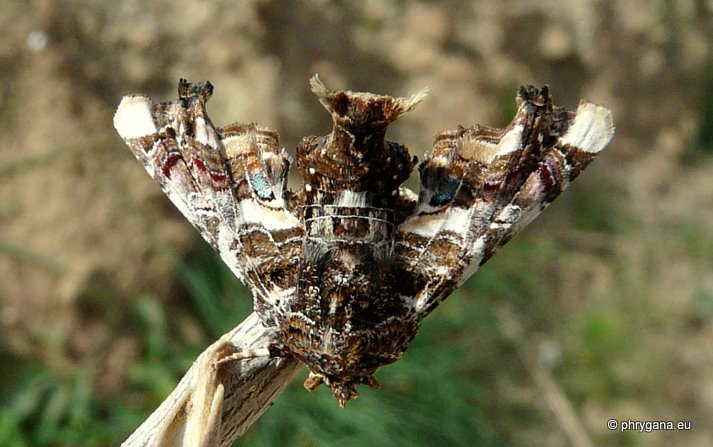
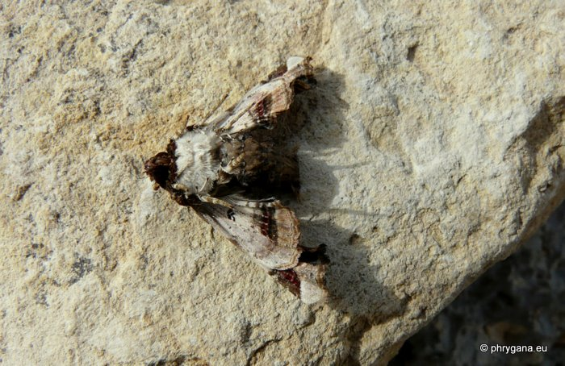
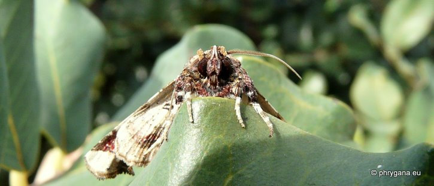

| PHRYGANA | Fauna | Flora |
additions nouveautés |
espèces species |
contact -
info - commentaires phrygana1 (at) gmail.com |
| diversité crétoise -- Cretan diversity | |||||
| Eutelia adulatrix (Hubner 1813) |
| 151 | Fauna | EUTELIIDAE | Euteliinae | Eutelia |
|
 Eutalia adulatrix Melambes (Agios Giorgos) 07 janvier 2010 |
| en: Pistacio moth | |
| Envergure: de 22 à 26 mm. Abdomen relevé courbé. | |
| La couleur de fond est brun chocolat avec de fines transversales et une bande médiane blanche. Un ocelle bleu dans l'aire postmédiane. | |
| Chenille oligophage: Pistacia lentiscus, Anacardiaceae | |
| Espèce bivoltine | |
| Période de vol: janvier mars avril août septembre | |
| Statut en Crète: indigène -- native | |
| Biotopes en Crète: phrygana, vieilles olivaies, bords de chemins, champs abandonnés | |
| Altitudes: 0 - 500 m | |
| Distribution: Europe Moyen-Orient | |
| Note: Les adultes viennent à la lumière. | |
|
 Eutalia adulatrix Melambes (Agios Giorgos) 07 janvier 2010 |
|
 Eutalia adulatrix Melambes (Agios Giorgos) 07 janvier 2010 |
| 01 juillet 2011 |
| © paul fontaine -- © Phrygana.eu 2007 -- 2013 |